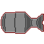
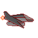
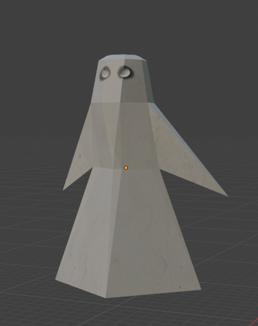
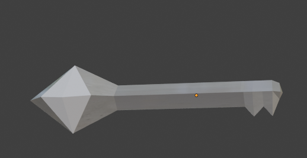
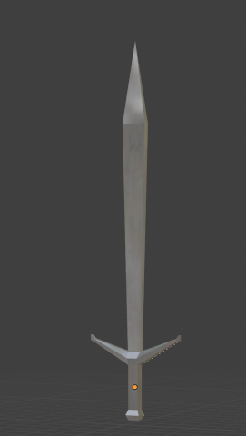

This page would display the art that I've worked on. Specifically, the games and assets that I have created. This is still a work in progress, but here are some of the games I've made in the meantime.
On a desolate Earth, join a rebellion in a fight against evil corporations! This is a side-scrolling shootemup with fast combat, tricky enemies and empowering special abilities. See if you can beat the final boss! Here are some assets that I made for this game:
 
This is a game that questions the player: what does it mean to keep hope alive? FIRE KEEPER is an adventure game filled with puzzles, relentless enemies and dire resource management. Here are some assets I made for the game:
  
Brent Porter has been investigating the disappearance of his daugther for 6 months, has he finally tracked her down? 19 Blaine Avenue is a PS1-inspired Thriller game where players must solve puzzles, connect the pieces of a dense narrative and try to solve the case of Porter's missing daughter. A game made by Dayna Vos, Apayin Odame-Tayki and Jordan Chicksen.
A digital version of an abstract strategy game, 90s Twist is a funky take on X's and O's where players must sabotage each other to win! A game made by Rameez Cassim, Jesse Schroder, Nkosinathi Titus, Seren Mafunda and Jordan Chicksen. For this game, I focused on programming and scene structure, so there are no assets to show.
A cozy item management game where players can buy, store, sell and rent items. Every action either gains money or costs money. Try your best to earn $300! For this game, I focused on programming and made no assets, so there are no assets to show.